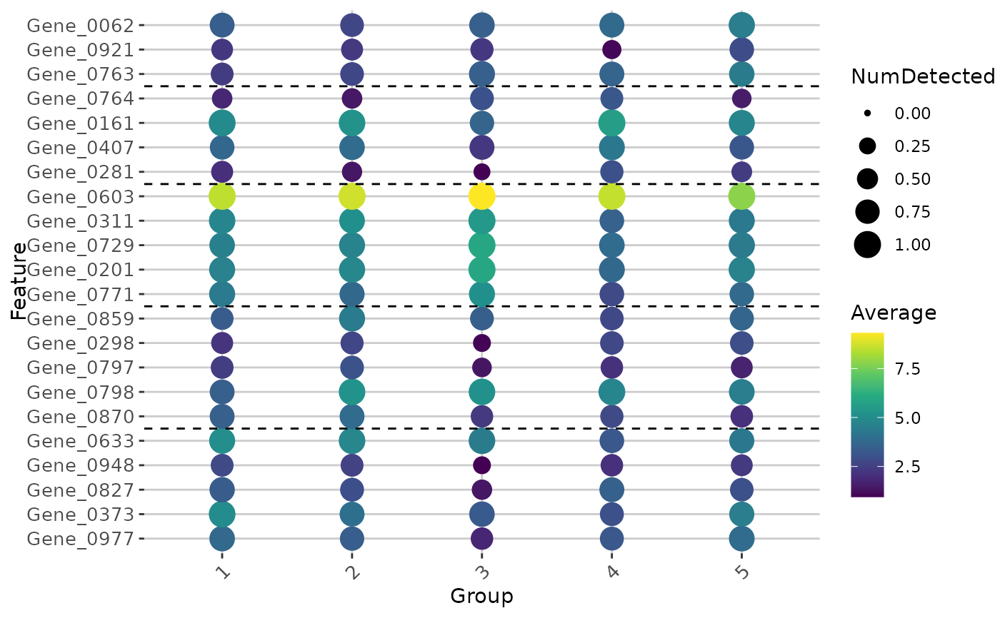

Plot a dot plot of n marker features grouped by cell metadata available methods are wilcoxon rank-sum test
Usage
plot_marker_features(
object,
group_by = "batch",
num_markers = 5,
selected_values = NULL,
return_plotly = FALSE,
marker_method = "wilcox",
experiment = "gene",
hide_technical = NULL,
unique_markers = FALSE,
p_val_cutoff = 1,
...
)Arguments
- object
a object
- group_by
the metadata variable from which to pick clusters
- num_markers
default is 5
- selected_values
selected values to display
- return_plotly
whether to return an interactive plotly plot
- marker_method
"wilcox"
- experiment
experiment to plot default gene
- hide_technical
whether to exclude mitochondrial or ribosomal genes
- unique_markers
whether to plot only unique marker genes for group
- p_val_cutoff
cutoff for p value display
- ...
extra parameters passed to ggplot2
Examples
data(small_example_dataset)
plot_marker_features(small_example_dataset, group_by = "gene_snn_res.1")
#> stashing markers for gene_snn_res.1
